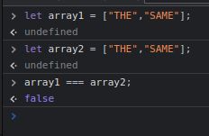
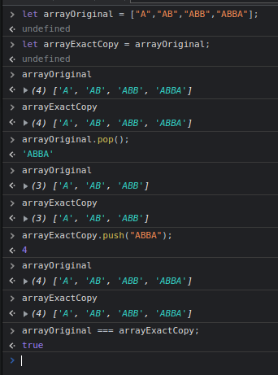

When trying to compare two array sets or specific values, it will always return false.
An array variable is only a reference to the set of values.
["hey"] === ["hey"];
false
They can not be compared because they are only referencing the array, it is not the same array.
If we are to create an exact copy, we can have it result in true.
Here we created a variable for an array.
Then we gave the variable another name additional to the first one, so the reference is still the same, they are pointing to the exact same array this time.
